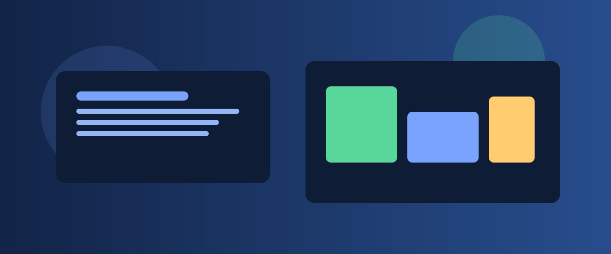
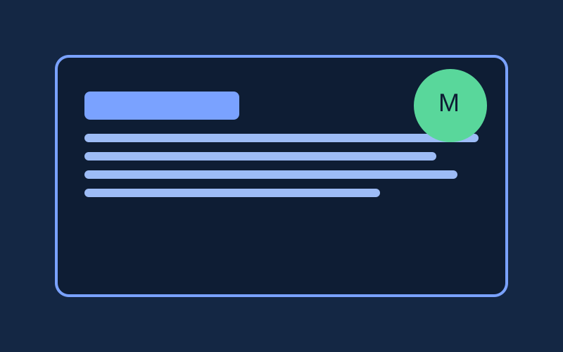
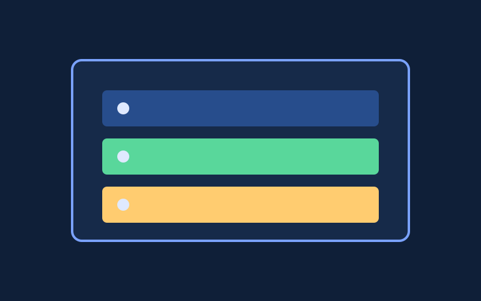
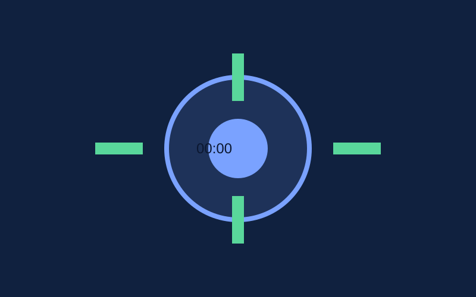

Relatórios · Inventário Documental
Relatório Detalhado dos Arquivos .md (v1)
Consolidação técnica e funcional dos principais arquivos Markdown do workspace. O objetivo é dar visão executiva e operacional para manutenção, segurança e continuidade.
Relatórios · Inventário Documental
Consolidação técnica e funcional dos principais arquivos Markdown do workspace. O objetivo é dar visão executiva e operacional para manutenção, segurança e continuidade.




| Arquivo | Função principal | Criticidade | Status |
|---|---|---|---|
| AGENTS.md | Governança operacional e segurança comportamental | Alta | Ativo |
| MEMORY.md | Preferências e decisões duráveis | Alta | Ativo |
| WEB-SERVER.md | Baseline de infraestrutura web | Alta | Ativo |
| SOUL.md | Princípios de postura e tom | Média/Alta | Ativo |
| USER.md | Preferências de comunicação e contexto humano | Média | Ativo |
| IDENTITY.md | Identidade estável da assistente | Média | Ativo |
| TOOLS.md | Inventário local de ferramentas | Média | Parcial |
| HEARTBEAT.md | Rotinas de verificação periódica | Baixa/Média | Controlado |